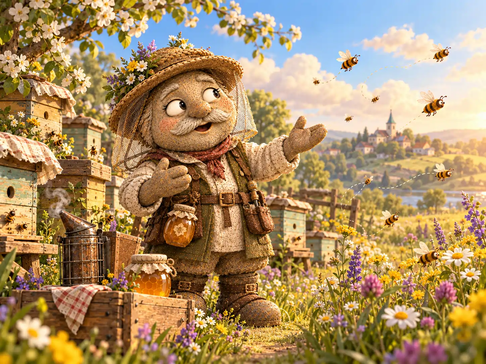
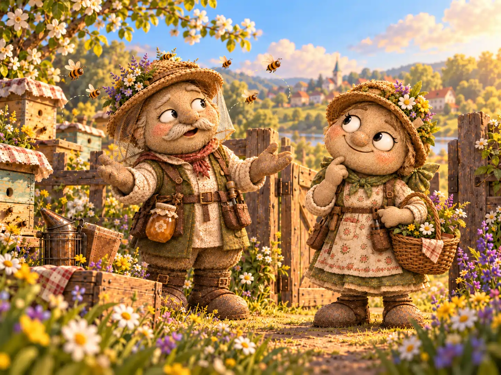
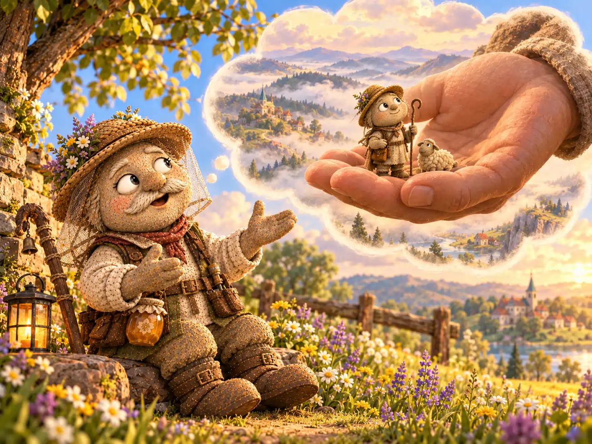
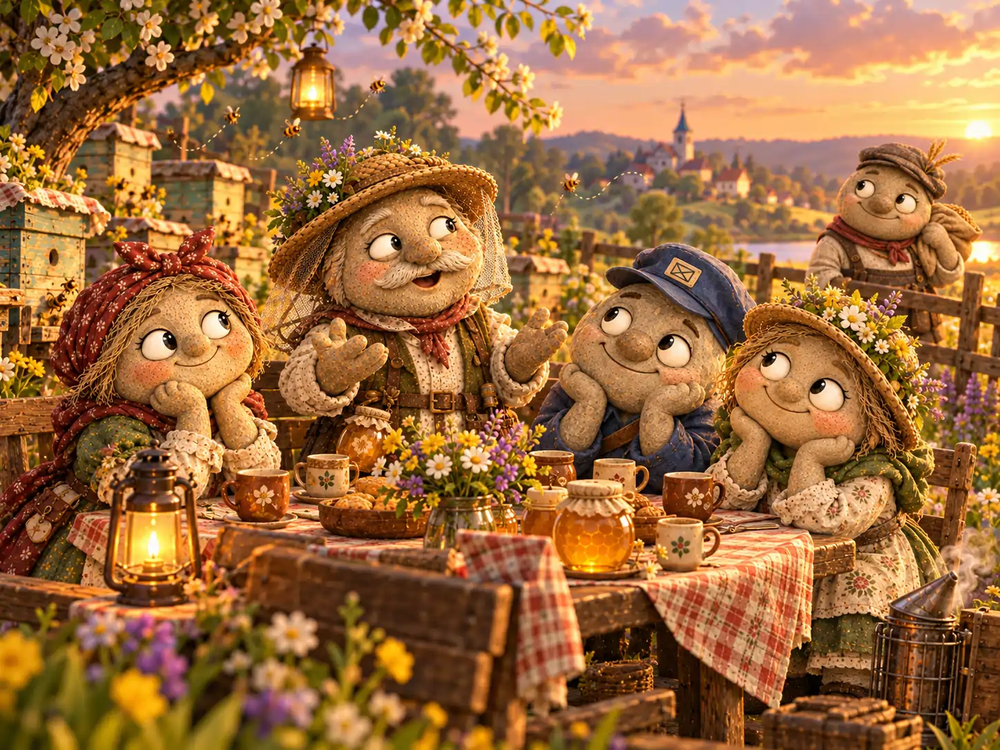

Если в Галькино кто-нибудь спрашивал дорогу, Никифор Гудков непременно помогал. Сначала он подробно объяснял, где повернуть, затем вспоминал, кто построил мостик через ручей, а под конец предлагал послушать, что однажды случилось с этим мостиком во время грозы. Дорогу после такого разговора обычно находили без труда. Правда, выходили в путь гораздо позже, чем собирались.
Никифор был деревенским пасечником. На опушке за его домом стояли аккуратные ульи, между которыми росли душица, клевер и полевые цветы. Он следил, чтобы пчёлам хватало места, вовремя чинил крышки, готовил поилки и никогда не забирал из ульев лишнего мёда. Пчёл он знал по повадкам, а о каждом удачном медосборе мог рассказать так, будто речь шла о путешествии на край света.
Особенно Никифор любил разговаривать с самими пчёлами. Он не думал, что они понимают каждое его слово. Просто на пасеке ему хорошо думалось вслух, а негромкое жужжание казалось самым доброжелательным ответом.
Но больше всех новостей и баек Никифор дорожил одной историей — о великанах. Её он собирал по крупицам: запомнил давнюю легенду, расспросил путешественника Елисея Перевалова, а потом сверился с заметками в потрёпанной книге. Книга утверждала, будто за дальними холмами некогда жили великаны, способные переступить реку одним шагом. Никифор не знал, правда ли это. Зато был уверен: получился замечательный рассказ.
— Вот соберу слушателей — и поведаю всё от самого начала, — обещал он себе. — Только надо найти таких, которые никуда не спешат.
Взгляд его неизменно обращался к пасеке. Уж там-то, казалось Никифору, слушатели всегда на месте.
✦ ✦ ✦
Однажды утром Никифор взял книгу, поставил возле ульев маленькую скамейку и начал:
— Давным-давно, когда тропинки были уже, а деревья, говорят, выше колоколен, за северными холмами жил великан…
На ближайшем улье приземлилась пчела. Никифор одобрительно кивнул: начало, несомненно, заинтересовало публику.
— Был он так огромен, что однажды принял мельничное колесо за пуговицу. Но это ещё не самое удивительное…
Пчела взлетела и направилась к цветущему клеверу. Следом из улья вылетели другие. Никифор сделал небольшую паузу, надеясь, что слушатели вернутся. Но жужжание всё дальше перемещалось к лугу.
— Ах вот как! — удивился он. — Даже до великана не дослушали!
Он попробовал продолжить возле другого улья. Там дело пошло не лучше: пчёлы появлялись у летка, ненадолго задерживались и снова разлетались. К полудню Никифор произнёс начало своей истории трижды, а до середины так и не добрался.

С пасеки он ушёл расстроенный. Впервые ему показалось, что его рассказ никому не нужен.
У ворот Никифор встретил Василису Камушкину. Она несла корзину с рассадой и сразу заметила его непривычно молчаливый вид.
— Что случилось, Никифор?
— Представь, решил рассказать пчёлам историю о великанах. Готовился, книгу перечитывал. А они разлетелись, едва я начал!
Василиса поставила корзину на землю.
— Сейчас клевер цветёт, — сказала она. — Для пчёл это самая работа. Они ведь не от тебя улетели, а за нектаром.
— Я знаю, что им надо трудиться, — вздохнул Никифор. — Просто думал, что хоть кто-нибудь останется послушать.
— А ты сам часто оставляешь работу, когда кто-нибудь затевает долгий разговор?
Никифор хотел ответить, что, конечно, часто. Но вспомнил, как на прошлой неделе спешил закрыть ульи перед дождём и не дослушал вопрос Прохора. Пришлось признать:
— Если честно, не всегда.
Василиса улыбнулась и отправилась дальше, а Никифор остался стоять у ворот. Обида немного утихла, но желание поделиться историей никуда не делось.

✦ ✦ ✦
К вечеру Никифор принёс в деревню несколько баночек свежего мёда. Возле лавки Дарьи Копейкиной он встретил почтальона Тимофея, который разбирал письма.
— Тимофей, ты слышал когда-нибудь о великане, который потерял дорогу домой?
— Нет, — ответил почтальон. — Но мне нужно успеть с письмами до закрытия школы.
Никифор уже набрал воздуха, чтобы объяснить, почему великан вообще заблудился, но вовремя остановился.
— Тогда расскажу вечером, если захочешь. А сейчас не стану задерживать.
Тимофей с облегчением поблагодарил его и поспешил дальше. Дарья, слышавшая разговор, выглянула из лавки.
— Никифор, у тебя необыкновенное терпение к пчёлам, — заметила она. — Ты часами наблюдаешь, как они трудятся. Почему же с людьми торопишься рассказать всё сразу?
— Боюсь забыть самое интересное, — признался пасечник.
— Так запиши для себя. А человеку сначала дай сказать, есть ли у него время.
Никифор посмотрел на принесённую книгу. Между её страниц лежали его собственные заметки. Оказалось, он и без слушателей мог сохранить каждую подробность.
— А ты бы послушала вечером? — спросил он.
— После закрытия лавки — с удовольствием. Только обещай, что великан не добирался до дома семь дней исключительно потому, что останавливался поговорить с каждым встречным.
Никифор рассмеялся.
— Нет, нет! У него была причина получше.
Он хотел тут же назвать её, но удержался. Впервые за весь день у него получилось оставить самое интересное на потом.
✦ ✦ ✦
На следующий вечер Никифор поставил у пасеки несколько скамеек и принес чайник, кружки и мёд. Пришли Дарья, Тимофей и Василиса. Прохор Мельников остановился у калитки по дороге с мельницы и тоже решил послушать. Никто никого не торопил.

— У меня есть история о великане, — объявил Никифор. — Если вы не против, расскажу её. Она длинная, но я выберу самое важное.
Гости устроились поудобнее.
Оказалось, тот великан мог видеть далёкие горы, но плохо различал маленькие тропинки под ногами. Однажды он заблудился в тумане и никак не мог отыскать дорогу к своему дому. По пути он встретил крошечного пастуха, который предложил помощь. Великан сначала рассмеялся: что может знать о большой дороге такой маленький путник? Но пастух хорошо знал родной луг, каждый ручей и поворот. Он провёл великана к дому прежде, чем туман рассеялся.

— И что же великан дал пастуху в награду? — спросил Прохор.
— Ничего золотого, — ответил Никифор. — Он помог починить мост через ручей, по которому пастух водил стадо. А ещё впервые понял, что маленький не значит бесполезный.
На этот раз Никифор не спешил переходить к следующему эпизоду. Он отвечал на вопросы, слушал догадки и смеялся вместе со всеми. История постепенно становилась общей беседой, а не длинной речью одного рассказчика.
Когда стемнело, Тимофей сказал:
— А ведь великан похож на тебя.
— Ростом? — удивился Никифор и посмотрел на свои каменные башмаки.
— Нет. Ты тоже иногда так занят собственной историей, что не замечаешь, чем заняты остальные.
Никифор задумался. Потом взглянул на ульи, откуда доносилось спокойное вечернее жужжание.
— Знаешь, пожалуй, ты прав. Сегодня я впервые не только рассказывал, но и слушал.
Гости разошлись довольные. На столе остались пустые кружки, крошки от пирога Марфы и одна закрытая баночка мёда, которую Никифор обещал передать Таисии для библиотечного чаепития.
✦ ✦ ✦
Наутро Никифор снова отправился к пчёлам. Он проверил поилки, осмотрел ульи и остановился у цветущего клевера. Пчёлы прилетали и улетали, не теряя времени. Пасечник наблюдал за ними так внимательно, словно они рассказывали ему свою собственную историю — без единого слова.
— Ну что, работницы, — сказал он наконец, — вчера у меня были слушатели. А сегодня я побуду вашим.
Он сел на скамейку и надолго замолчал. Для Никифора Гудкова это было событие, о котором он, разумеется, позже рассказал всей деревне.
В Почтовом архиве Галькино после этого появилась запись:
«Никифор Гудков, пасечник. Историю о великанах наконец рассказал. Пчёлы на встречу не явились по уважительной причине: медосбор. Рассказчик научился выбирать время, а слушатели попросили продолжения».